2025年10月31日晚23:44，神舟二十一号飞船在酒泉卫星发射中心成功发射并对接，这是我国空间站建成后的第6次载人航天任务。随后，2025年11月25日12时11分，满载物资的神舟二十二号飞船成功发射，这是我国载人航天工程进行的第一次应急发射任务，标志着中国载人航天工程向前迈出的又一步。
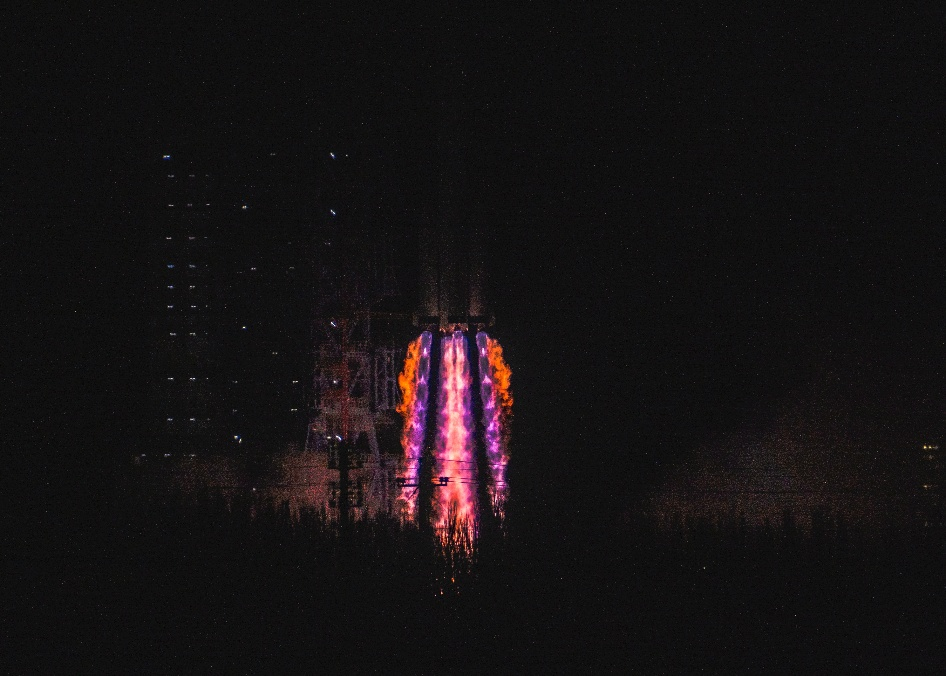
神舟二十一号发射时产生的尾焰
在火箭发射已经不再是新鲜事的今天，我们一定都见过火箭发射的影视资料，你是否好奇过，为何火箭发动机的尾焰不是单纯的“火焰”形状？人们常说的“马赫环”是什么？它是如何形成的？接下来，物理串烧栏目将用两期科普带你了解超音速视角下的世界。
一 激波
我们先不进入超音速气流的环境，为了便于理解“波”，我们利用水来作为载体。
众所周知，当水流遇到障碍物时，会产生一道反射波，反射波向上游传播而去。但波在介质中的波速只与介质本身有关，当水前进的速度等于波速时，波的运动状态表现为“静止”在原位置形成驻波。若水的速度进一步增大，反射波甚至无法向上游传播，从而在这个位置反复叠加，形成障碍物之前一个固定位置的波。
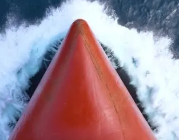
船首处形成的波
在空气中，那道遇到障碍物时产生的波就称为“压缩波”，当气体流速大于声速时，压缩波在同一个位置持续叠加，此处就会形成一个状态突变的界面，这个界面就称为激波。
对于超音速飞行的物体，激波形成的位置将在物体的正前方并向四周扩散，大致呈圆锥形。
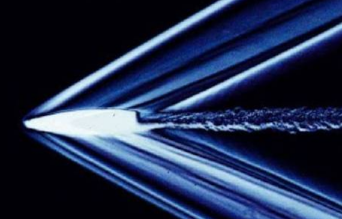
纹影摄影:子弹附近的激波
需要明确的是，激波并非是一个通常意义上的波，它的厚度极薄，通常只有几个分子自由程，其更接近于一个界面，在界面之外，气流处于正常状态，在界面之内，气流处于高压的亚音速状态。所谓的“音爆”正是由于超音速物体产生的激波扫过人耳带来的巨大压强变化而产生的。
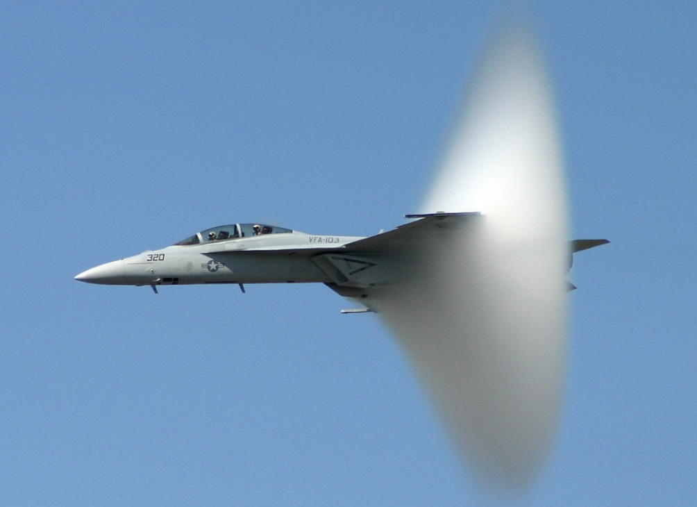
飞机达到音速并突破音障时产生的音爆云
二 乘波体
我们都知道，飞机产生升力利用的就是上下表面的压强差。机翼上凸下平的设计使得机翼上方的气流流速更大，压强更小，机翼的上下表面有了压强差，因此产生升力。
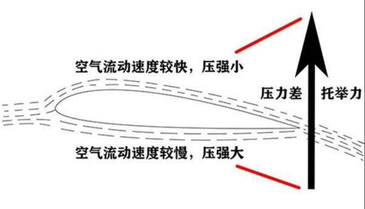
飞机机翼产生升力的原理图
但如果有同学仔细观察过高超音速导弹(如纪念反法西斯战争胜利80周年大会上亮相的DF-17常规弹道导弹)的外形就会发现，它与我们所熟知的机翼外形完全不同，虽然也有类似于“机翼”的结构，但并非上凸下平的形状。一般飞机为了获得足够大的升力，机翼都会做得很长，但高超音速导弹的“机翼”似乎有些太短了？
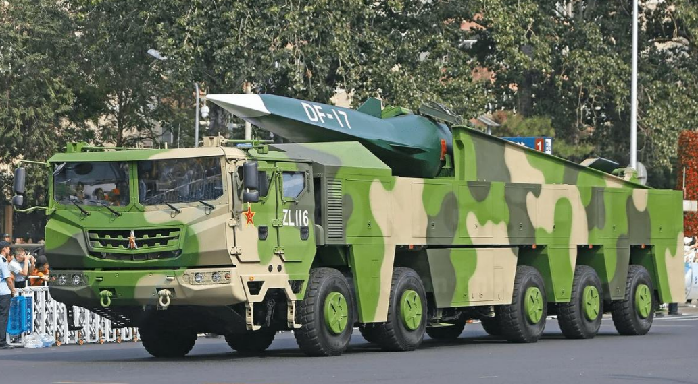
我国高超音速导弹DF-17的外形
事实上，这是因为其飞行原理与常见飞机完全不同。这种构型我们称其为乘波体构型。
结合子弹周围的激波形状我们可以推测，三维的激波形状应该是一个圆锥。我们刚刚提到，激波是一个界面，在激波内部靠近激波的位置附近，气压高于其他位置的气压，也就是说，如果这里有一个片状物体，那么物体的上下两侧就会存在压强差，从而产生力的作用。在激波的下半部分，下方压强更大，上方压强更小，此时产生的力是向上的，完全可以用来为飞行物体提供升力！
大部分乘波体构型的下表面光滑，正是为了能够利用高超音速飞行产生的激波高压区产生升力。
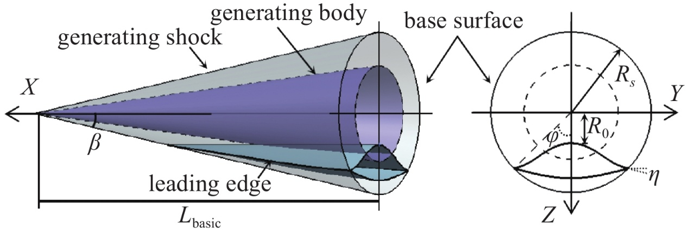
乘波体构型原理图小结
正是由于巧妙的外形设计让超音速情况下的飞行原理有了本质上的变化，也使得物体能够仅凭借气动外形维持高超音速的飞行，也让我们能够拥有“高超音速导弹”这样强有力的防卫武器，维护着国家的和平安定。
御波而行(下) 拉瓦尔喷管、马赫环
上期物理串烧我们一起讨论了激波与乘波体的概念，但似乎与火箭的关联并不大，那么这期物理串烧我们就来进入正题，来聊一聊应用十分广泛的拉瓦尔喷管与美丽的马赫环。
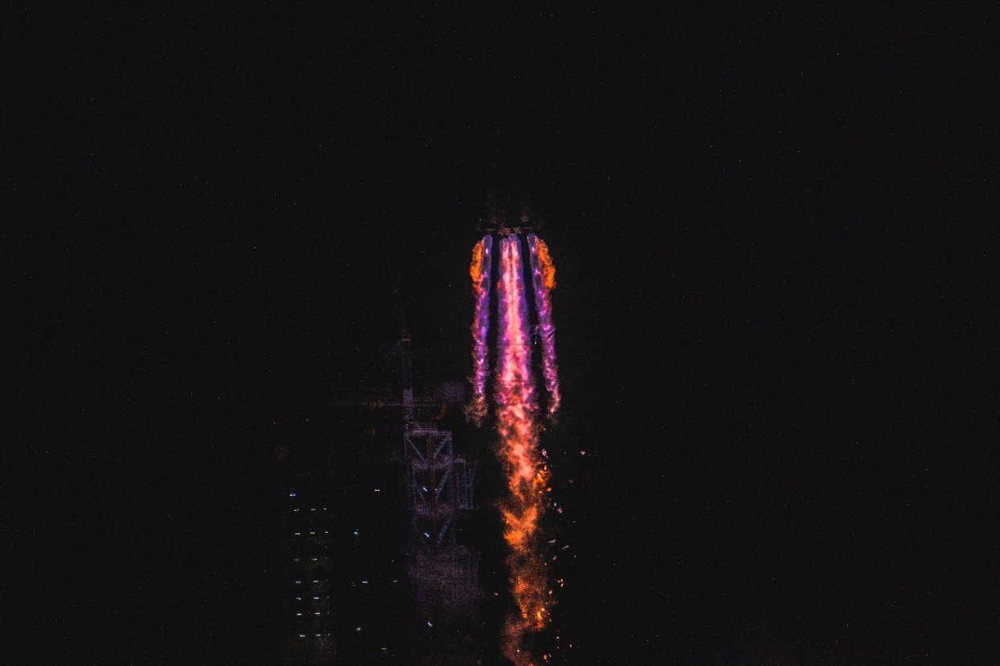
神舟二十一号火箭发射产生的尾焰
三 动量
众所周知，化学工介质火箭的基本原理是动量守恒。我们都知道，动量表征了物体的运动状态，是物体的质量与速度的乘积，方向与速度方向一致。当燃料燃烧后会以超高速度从发动机喷出，从而获得巨大的动量，由动量守恒方程我们可以知道，此时为了保持动量的守恒，火箭的箭体也将获得反方向的动量。再由冲量定理(动量变化量等于推力与作用时间的乘积)，即可求得推力大小。
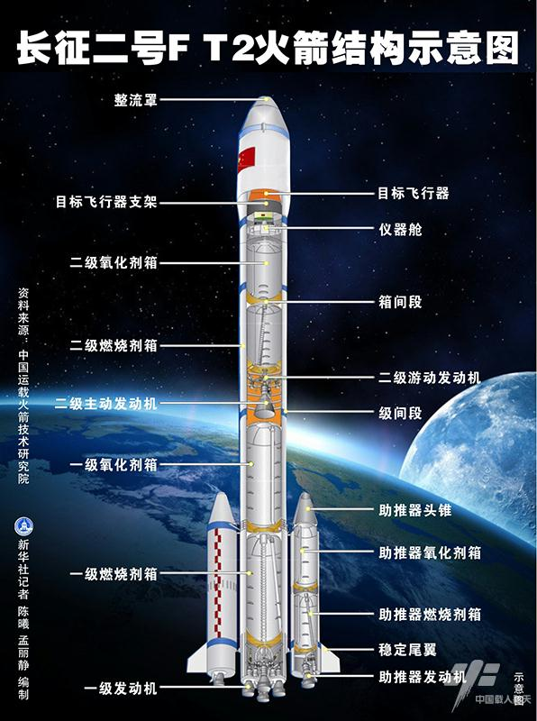
长征二F火箭内部结构
那么为了获得尽可能大的推力，所喷出的工质(燃料)的喷出速度就要尽可能地大。那么如何获得更大的出口速度呢？这就要提到一种特殊的结构：拉瓦尔喷管。
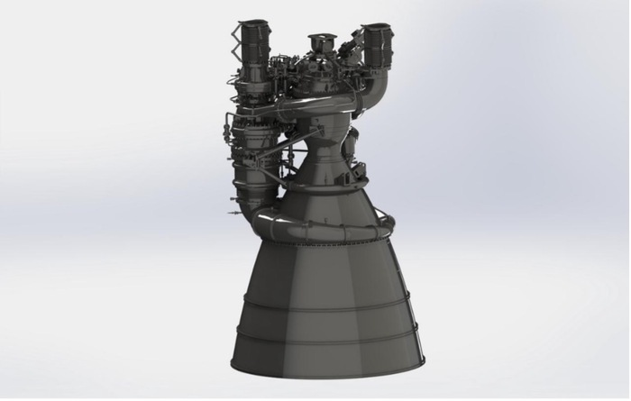
2022年10月19日试车成功的TQ-15A型液氧甲烷发动机
四 拉瓦尔喷管
1889年，瑞典工程师拉瓦尔(Laval，Carl Gustaf Patrik de)获得了膨胀喷管相关的专利。通过这一喷管，能够将亚音速的气流加速到超音速，对化学火箭有着极大的意义。
这里需要涉及一点点物理方程，但相信笔者，一点都不难。
在整个过程中，系统的质量是守恒的，质量与密度的关系有：
其中，$\rho$ 为密度，$A$ 为气流的截面积，$x$ 为气流的长度。那么如何与速度关联起来呢？非常明显，两边分别对时间求导：
其中，$C$ 为一个常数，这个方程也被称为连续性方程。
在拉瓦尔喷管的亚音速收缩段(入口到喉部)，截面积 $A$ 逐渐减小，前段密度变化相对来说较小，为了满足连续性方程，气流的速度 $v$ 将初步增加，在这一段，连续性方程的主要因素为截面积 $A$ 。当气流到达喉部时，截面积达到最小，速度也达到了前半段的最大。
那么是不是一直收缩面积就可以了呢？结合拉瓦尔喷管的结构我们就会发现，在喷管的后半段，其开口反而扩张了，这是为什么呢？让我们接着喉部继续往后分析：
此时，若气体流速达到音速，在经过喉部之后气体将开始剧烈膨胀。
经过喉部之后，虽然面积 $A$ 也在逐渐增大，但密度的减小更为剧烈，这一阶段的连续性方程将由密度主导。为了保证连续性方程的成立，速度必将进一步增大，从而使得气体的流速超过音速，从而尽可能地增大火箭箭体获得的推力。
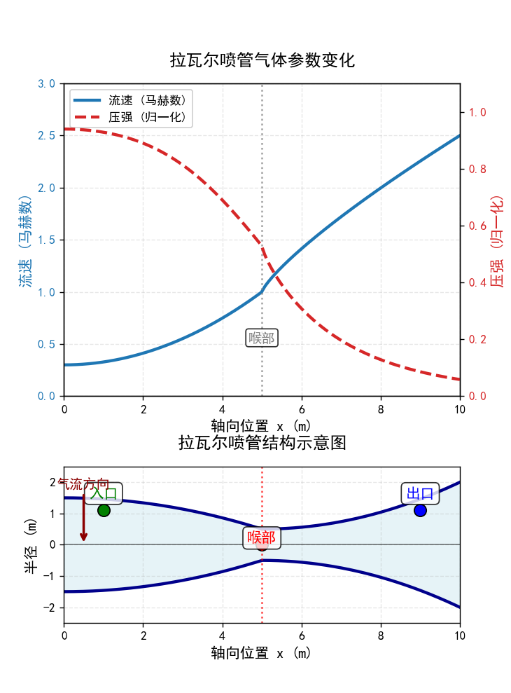
拉瓦尔喷管结构示意图
五 马赫环
由此可见，这些气流离开拉瓦尔喷管时的速度已经超过了音速，由上一期的讲解我们知道，超音速气流前方将出现激波，正是由于激波的作用，使得尾焰呈现出特殊的现象(钻石激波，即马赫环)，我们来进一步分析一下：
气流刚刚喷出时，其气压高于外部气压，气体在喷管外部将进一步膨胀。
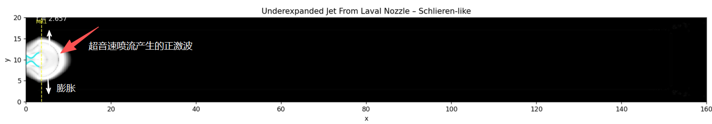
在正常气流中，气体膨胀到与外部气压相等时就会保持稳定。但在超音速流中，由于膨胀速度过快，“刹不住车”，那么此时其内部气压就会逐渐低于环境气压(过冲)，此时气体就会开始收缩，产生压缩波。
在超音速射流中，压缩波不断叠加，但由于气流不是正对外部气体而去，形成的激波并非垂直于射流速度，因此形成了一道斜激波，使得气流的方向发生变化而大小变化并不大。
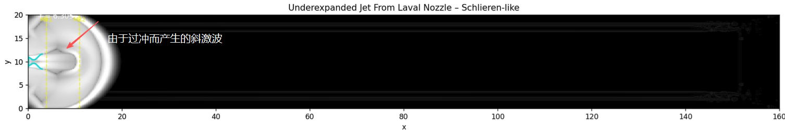
斜激波随着气流传播的前锋向前传播，直到各个方向的斜激波相交。之前提到过，在激波内部靠近激波的区域气压更高，这也是乘波体的基本原理。那么很容易推测得出，在激波的交界处气压将达到最高，气体温度也将进一步升高，发出的光也会更强，那么发光区域的三维结构将形成一个“钻石形结构”，这个结构的底部为一个圆环面，就会形成第一个马赫环。
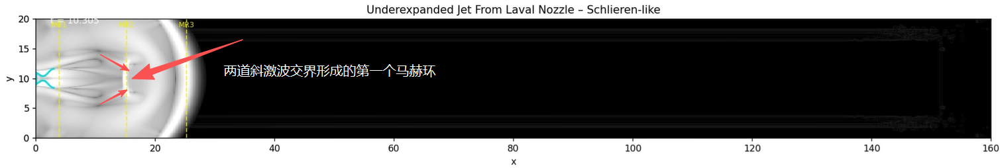
在马赫环的位置，气体的气压达到最高，明显已经再一次超过了环境气压。在第一个马赫环之前，由于存在激波的限制而没有进一步膨胀。在第一个马赫环之后，气体将再一次膨胀，重复气体刚离开拉瓦尔喷管的过程，即膨胀-收缩的循环，从而形成周期性的圆环结构。
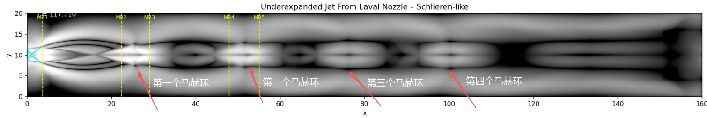
由于气体受到一定阻力，其流速也将逐渐减小，当气体流速小于音速时便无法继续产生马赫环，因此马赫环的数量也是有限的。
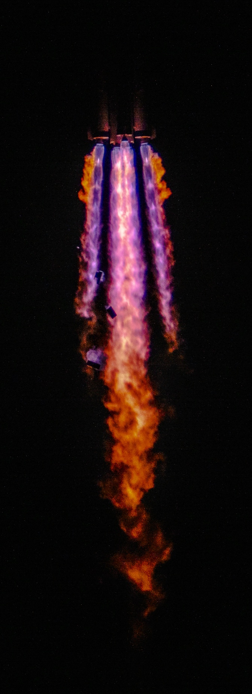
实际的马赫环照片
结语
自四千多年前的敦煌时期，洞窟内的飞天壁画就彰显着人类对九天之上的渴望。在四千多年后的今天，飞天已经不是什么难事，无论是在风中起舞的飞机，还是乘着激波向前的导弹，抑或是将人类送上九天之外的火箭尾焰，无一不展示着人类对宇宙的好奇。人类用激波点亮的钻石项链，不仅点亮了夜空，更标志着我们向星辰大海迈出的重要一步。马赫环的每一次明灭，都闪耀着物理学的光辉，正是对物理定律的深刻理解，支撑着人类御波而行，跨越天际。
(文章部分图片来源网络)